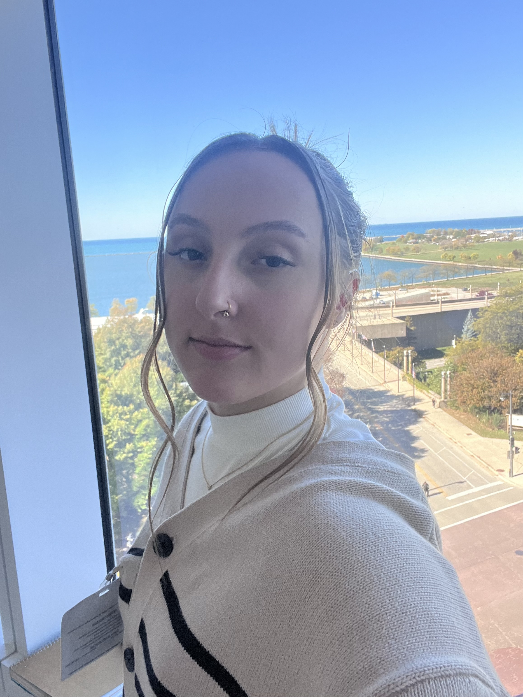
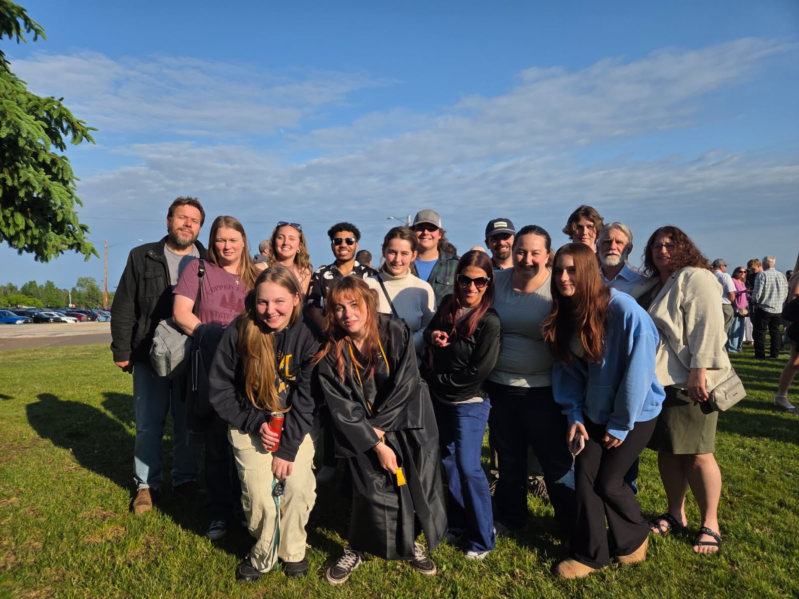
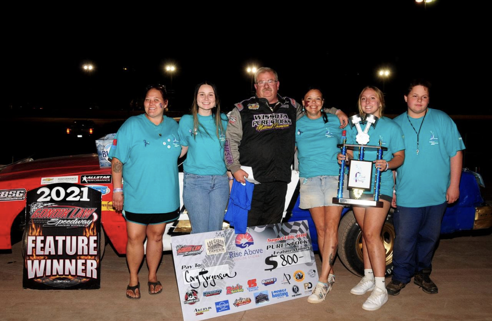
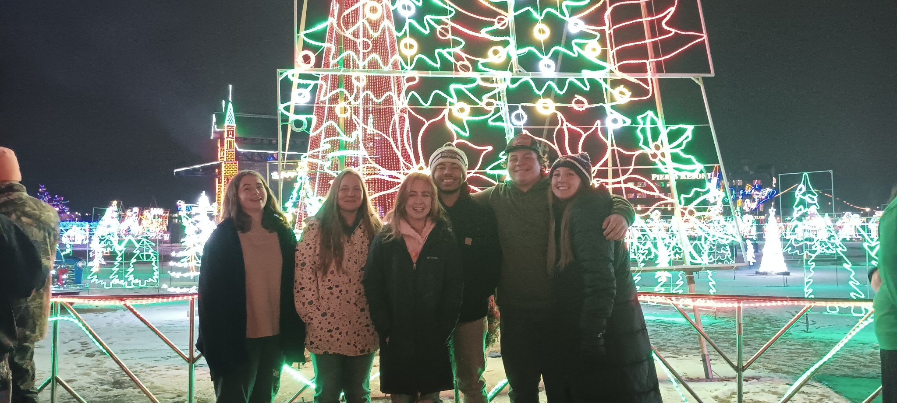
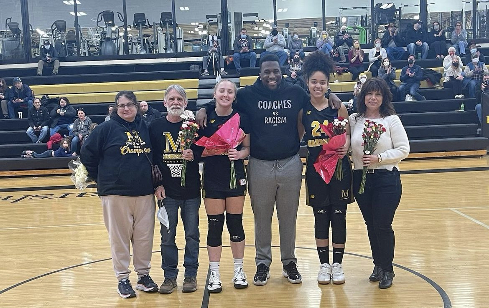
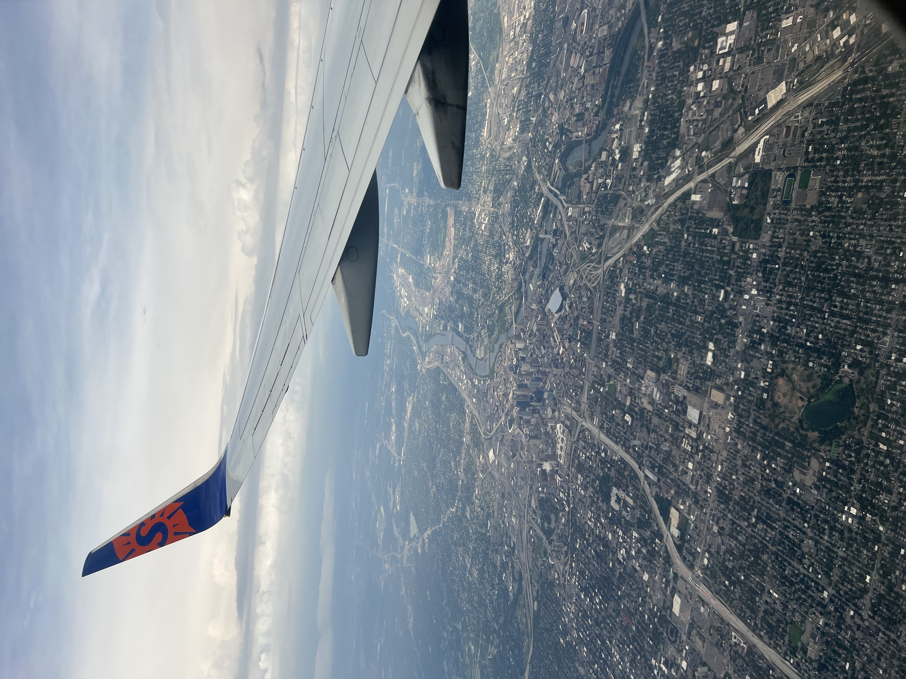
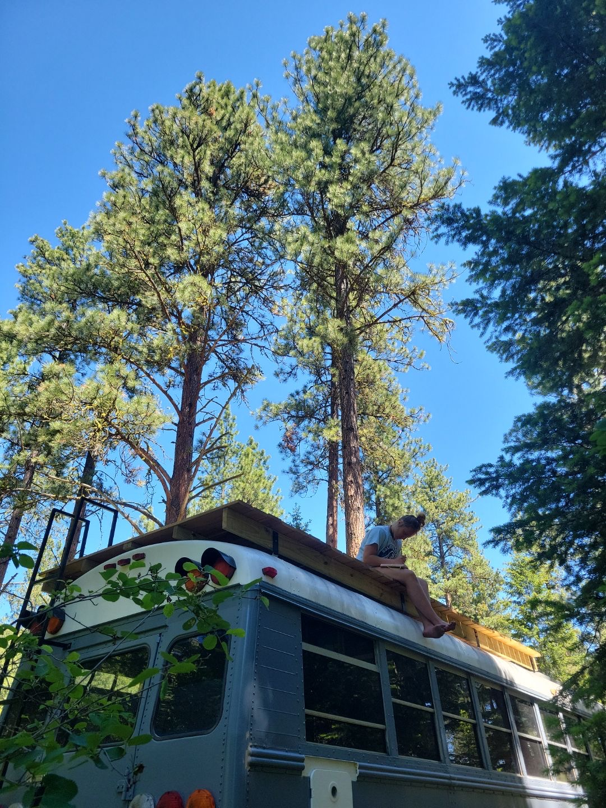
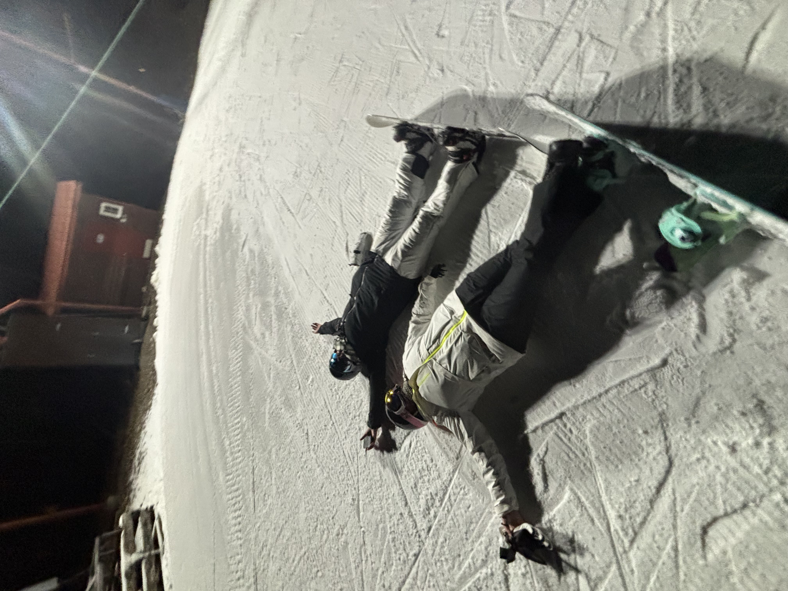

I’m a curious, ambitious designer with natural grit and a visual-first mindset. I am always pushing to
learn more, grow faster, and become the best version of me for myself and the people around me.
Advertising + Graphic DesignUX/UI + Digital ProductGraduating May 2026


The people I do it for.
This is my village. My mom, grandparents, my four little siblings, boyfriend, aunt, uncle, and closest family friends.

Rise Above Suicide Awareness "Night at the Races" Annual Fundraiser
One of the most important non-profits I have volunteered with. Picture, me and my brother presenting the winner with a trophy under our fathers name.

My People
My four little siblings and boyfriend. These are the people I love most, they are the people I want to inspire and show anything is possible.

Basketball and Life Lessons
My favorite sport ever. Arguably my favorite hobby. The people and sport taught me important life lessons, and I wouldn't be who I am without my mentors and coach, CJ, to guide me into a fearless woman.
Outside of work



I’m most often spending time with my community; whether that’s with my group of gym enthusiasts, staying
close with family, doing arts and crafts, hanging with my people in Milwaukee, or playing pickup basketball.
I love to adventure and travel by road trips, flights, anything to help explore, though I haven’t been outside the U.S. yet.
That’s a 2026 goal.
I’m a jazz and R&B lover, and my current rotation includes J. Cole, Tyler, the Creator, Tyla, Mac Miller,
Glass Animals, and Kanye West. I’m also a huge food enthusiast (ask anyone). I watch Gordon Ramsay on repeat,
experiment with new recipes, and my boyfriend would tell you it’s always “top nom” (Top Chef reference).
Trying new cuisines and immersing myself in different cultures is a big reason I love travel—because we’re
all more alike than we are different.
Where I come from
I’m from a small town of about 300 people in Wisconsin called Hawthorne, just outside of Superior, as small-town
as it gets. I come from a nontraditional household, which pushed me to get out and explore what the world
had to offer.
I grew up volunteering consistently within underserved communities throughout the country, including my own, and that shaped how
I see the world. Later, sports became my outlet. I trained relentlessly and earned the opportunity to receive
a free education at a private college prep school. Basketball taught me discipline, grit, determination,
trust, and belief in yourself. If you don’t believe in you, no one else will. As for traditional art, it was my outlet and one of my personal talents.
Hawthorne, WI
Why I’m here
After graduating high school, I packed my bags and moved solo to Milwaukee to start fresh. Fast forward to now,
I’ve earned a full-time salaried role and I’m stepping into stability after graduating with my bachelor’s
degree in May 2026.
Still, I want more. I have people who depend on me, and I depend on myself to keep leveling up. The only limit
is yourself. Next up; moving beyond the Midwest and becoming part of the next design movement.